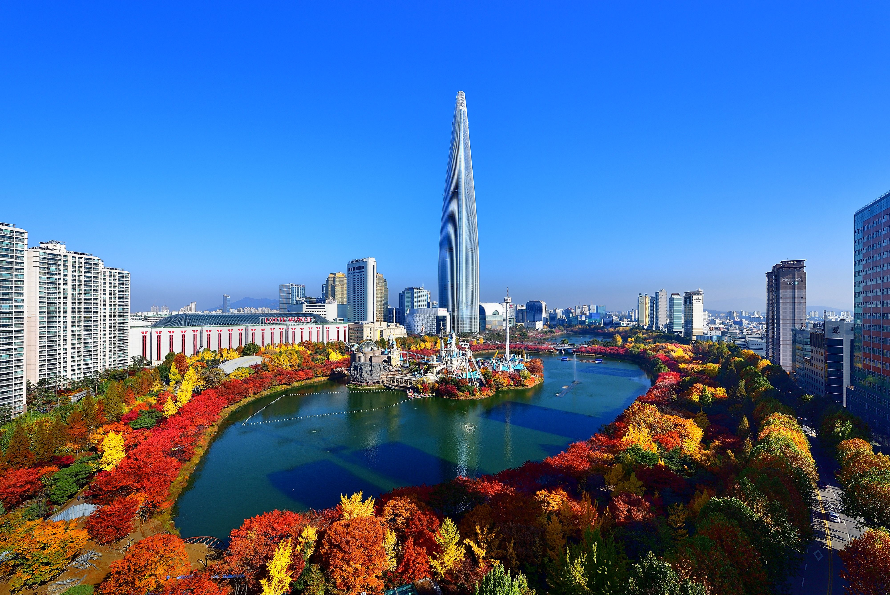
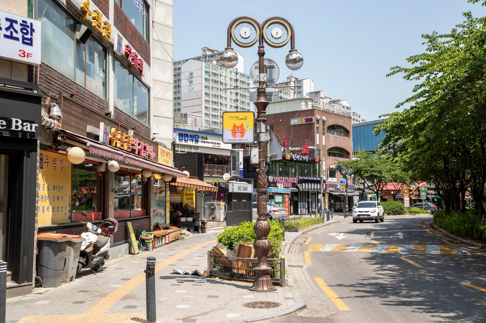

子ども連れでは「予定変更に強い拠点」が重要
子どもとの旅行では、疲れ、天気、思ったより早いホテル帰着などで予定が変わりやすくなります。地下鉄へ簡単に出られる、近くで気軽に食べられる、駅からホテルまでの最後の徒歩が分かりやすい。こうした街は、特定アトラクションのすぐ近くにあるという理由だけで選んだホテルより、家族の一日へ柔軟性を与えます。
多くの初回家族旅行では、明洞が最も使いやすい総合型の拠点です。ロッテワールドなどソウル東南部の予定が旅程を大きく占めるなら蚕室。大きな荷物、空港アクセス、静かな夜を優先するなら麻浦／孔徳が強くなります。
子どもとの旅行では、疲れ、天気、思ったより早いホテル帰着などで予定が変わりやすくなります。地下鉄へ簡単に出られる、近くで気軽に食べられる、駅からホテルまでの最後の徒歩が分かりやすい。こうした街は、特定アトラクションのすぐ近くにあるという理由だけで選んだホテルより、家族の一日へ柔軟性を与えます。
家族旅行では、予約時に想像する以上に客室レイアウトの差を感じます。少し高くても、全員がきちんと寝られるベッドがあり、スーツケースを置ける床面積があり、一日観光したあと部屋が窮屈すぎないなら価値があります。
大人が子ども、ベビーカー、大きなスーツケースを同時に管理すると、空港からの移動は一人旅とかなり違います。直通鉄道は便利ですが、乗換回数、駅出口、ホテルまでの最後の徒歩も同じくらい重要です。
昼に楽しい活気が、夜には疲れにつながる場合があります。買い物通りやナイトライフの中心に泊まる家族は、最も混むブロックの真上ではなく、少し静かな脇道のホテルのほうが通常使いやすいです。
家族に役立つ設備は、必ずしも豪華ではありません。エレベーター、ランドリー、十分なベッド、朝食、荷物預かり、複数人で使いやすいバスルームなどが実際の滞在を変えます。
スーパー、コンビニ、百貨店、気軽な飲食店が近いエリアは、家族の夜を楽にします。子どもが疲れ、夕食や日用品のためにもう1回地下鉄へ乗りたくないときに特に価値があります。
| エリア | 向いている旅行 | 空港・荷物 | 夜の雰囲気 | 主なトレードオフ |
|---|---|---|---|---|
| 明洞 | 初めての家族旅行 | 概ね楽 | にぎやかだが便利 | コンパクトな客室と観光客の多さ |
| 蚕室 | ロッテワールド・ソウル東側 | 空港から長い | 現代的で比較的穏やか | 歴史的中心部から遠い |
| 麻浦／孔徳 | 空港アクセス・静かな滞在 | 非常に良い | ローカルで中程度 | 近くの主要観光地が少ない |
| 仁寺洞 | 文化・静かな夜 | 中程度 | 穏やか | 一部の細い道 |
| ソウル駅 | 大きな荷物・鉄道旅行 | 非常に良い | 実用的 | 街の雰囲気が弱い |
| 東大門 | 買い物・柔軟な夜 | ホテルによる | 夜遅くまで活発 | 広い地区で便利さに差 |
| 弘大 | AREX・食事・活発な街 | Hongik University Station近くなら非常に良い | にぎやか | ナイトライフ周辺の騒音 |
| 江南 | 漢江南側の予定 | 空港から長い | 都会的でにぎやか | 歴史観光地への移動が増える |


多くの初回家族旅行で、最も分かりやすい総合型の拠点です。食事、買い物、ソウル中心部の観光を組み合わせやすく、毎回の食事や夜の予定を細かく決めなくても使えます。
観光客が多くにぎやかですが、子ども連れではその便利さが助けになることがあります。中央ソウルのホテルは客室が小さいことがあるため、地区名より実際のベッド構成と使える床面積を確認してください。
明洞ガイドを読む →
ロッテワールド、Seoul Sky、石村湖などソウル東南部の予定が大きい家族には使いやすいです。広い道路、現代的な商業施設、大型屋内施設があり、雨や猛暑の日でも予定を変えやすい面があります。
主なトレードオフは、宮殿など初回旅行の定番中心部から遠いことです。蚕室で過ごすのが1日だけなら、必ずしも泊まる必要はありません。この側の予定が数日にわたると、宿泊の実用性が大きくなります。
蚕室ガイドを読む →
空港アクセスが良く、より穏やかな拠点を求める家族に実用的です。孔徳にはAREX一般列車が停車し、周辺には日常的な飲食店が多く、主要観光地ほど絶えず混雑しません。
弱点は、ホテルの外に有名観光地が多くないことです。観光日は地下鉄移動が増えますが、複数の大きなスーツケースがある到着・出発日はかなり楽になることがあります。
麻浦・孔徳ガイドを読む →
宮殿、伝統街、静かな夜を好む家族に合います。景福宮、益善洞など歴史的な中心部を組みやすく、弘大や大きなナイトライフ地区より夜が落ち着く傾向があります。
一部ホテルは細い路地・古い街路網の中にあり、ベビーカーと最後の徒歩を確認する必要があります。夜遊びより文化を重視する家族には使いやすい場所です。
仁寺洞ガイドを読む →
大型スーツケースが複数ある家族には、特に実用的です。AREX、KTX、複数地下鉄で、空港と地方鉄道移動を簡単にできます。
街の雰囲気より交通が中心です。ホテルの外にカフェ、夜の散歩、観光地を求めるなら明洞などのほうが合いますが、到着日・出発日・大荷物では大きなストレスを減らします。
ソウル駅ガイドを読む →
買い物、DDP、ソウル中心部東側を使いたい家族に合う場合があります。大型モールと遅い営業時間は、観光が予定より長引いた日にも柔軟性を作ります。
ただし地区が広く、ホテルの便利さは実際の駅と通りで大きく変わります。予約サイトで近く見えることと、ベビーカー・荷物で楽なことは同じではありません。
東大門ガイドを読む →
AREX直通と気軽な飲食店の多さを重視する家族なら、弘大も十分使えます。昼はカフェ、買い物、周辺街を簡単に組み合わせられます。
問題は弘大全体ではなく、最もにぎやかなナイトライフ通りです。子どもの睡眠を優先するなら、そのブロックから少し離れたホテルのほうが通常合います。
弘大ガイドを読む →
クリニック、仕事、買い物、漢江南側の予定が家族の旅程を作るなら使いやすいです。現代的な施設、大きな商業エリア、長期滞在しやすいホテルもあります。
宮殿、明洞、歴史的中心部が主役の初回家族旅行では、子どもと毎日街を横断する移動が増えやすくなります。南側に数日使う明確な理由がある場合に選んでください。
江南ガイドを読む →3〜4人宿泊可と書いてあっても、4つのきちんとしたベッドがあるとは限りません。最大人数と、実際の客室構成を一緒に確認してください。
家族旅行では、客室カテゴリー名よりベッドタイプが重要です。ダブルベッド＋小さなソファ、床寝具、2つの通常ベッドでは、荷物を置いたあとの使い勝手がまったく違います。
同じ客室を2室予約できても、内部ドアでつながることは保証されません。本当にコネクティングルームが必要なら、自分の宿泊日に提供できるかホテルへ確認してください。
ホテル内にエレベーターがあっても、通り、地下鉄駅、ホテル入口までの間に階段がある場合があります。ベビーカー、寝ている子ども、大きな荷物では重要です。
地図で近い駅でも、一番近い出口にエレベーターがなければ不便です。ベビーカー利用なら、バリアフリー出口とホテル入口のルートを到着前に把握してください。
朝食は便利ですが、周囲にベーカリー、カフェ、コンビニ、気軽な飲食店が多ければ必須ではありません。家族がホテル周辺でどれくらい簡単に朝を始められるかで価値が変わります。
長い家族旅行では、予約時に思う以上に役立ちます。館内ランドリーまたは近くのコインランドリーがあれば、特に小さい子ども連れで持参する服を減らせます。
複数人で1室を使うなら、バスルーム写真も確認してください。シャワー、プライバシー、床面積は、忙しい朝の使いやすさを変えます。
駅名だけでは足りません。坂、大きな交差点、地下通路、長い出口で、短い地図距離が子どもと荷物では疲れる徒歩になります。
深夜到着では、受付時間、時間外チェックイン、周辺でまだ食事を買えるかを確認してください。長い国際線のあとほど重要です。
チェックイン前とチェックアウト後の保管は、ホテル時刻と空港・鉄道時刻が合わない初日・最終日をかなり楽にします。
弘大、東大門、江南のような大きな地区には、違う通りと駅入口があります。同じエリアのホテル2軒でも、家族の毎日はまったく違う場合があります。
家族はカップルや一人旅よりゆっくり動くことが多いです。少し便利な拠点は、休憩、天気変更、早くホテルへ戻りたい日に余白を残します。
エリアが決まれば、ホテル比較は簡単になります。1泊料金だけより、客室サイズ、ベッド構成、駅アクセス、上の家族向け実用条件を見てください。
多くの初回家族旅行では明洞が最も無難です。ロッテワールドが旅程の中心なら蚕室、空港アクセス、荷物、静かな夜を優先するなら麻浦／孔徳が特に実用的です。
ロッテワールド、Seoul Sky、ソウル東南部のアトラクションへ大きく時間を使う家族には特に向きます。現代的で一日を過ごしやすい一方、歴史的なソウル中心部からは遠くなります。
はい。観光、食事、買い物を組みやすく、毎日の細かい計画を減らせます。ただしソウル中心部のホテルは客室がコンパクトなことが多いため、客室サイズを必ず確認してください。
Hongik University Station近くで空港アクセスを重視する家族には使えます。子どもの睡眠を考えるなら、最もにぎやかなナイトライフ通りから少し離れたホテルが通常合います。
ソウル駅と麻浦／孔徳が特に実用的です。弘大もHongik University Stationに近く、実際の徒歩ルートが簡単なら便利です。
弘大、孔徳、ソウル駅はAREX一般列車を直接使えるため分かりやすいです。他の地区も空港リムジンやタクシーで十分使えるので、空港アクセスだけで滞在全体を決める必要はありません。
ホテルまでの駅ルートが簡単で、家族が荷物を扱えるなら鉄道は通常コスト面で有利です。深夜便、ベビーカー、複数の大型荷物、駅からの徒歩が不便な場合はタクシーへ追加料金を払う価値があります。
宮殿、伝統街、穏やかな夜を好む家族には良い選択です。一部ホテルは細い道にあるため、ベビーカーや重い荷物での最後の徒歩を確認してください。
家族の予定がすでに漢江南側に集中しているなら使いやすいです。宮殿、明洞、歴史中心の初回旅行では、毎日の横断移動が増える可能性があります。
最大宿泊人数、ベッド構成、使える床面積、駅アクセス、エレベーター、荷物預かり、周辺の食事を確認してください。こうした実用条件は、小さな設備差より家族旅行に重要なことがあります。
近いことは便利ですが、出口の条件も重要です。少し遠くてもエレベーターのある出口のほうが、階段だけの近い出口よりベビーカーと荷物では楽なことがあります。
主要旅行者エリアは一般に人通りが多く交通も便利なので、「最も安全」という地区名だけで選ぶより、ホテルの通り、駅からのルート、夜の周辺環境を見るほうが実用的です。明洞は日常の動線を分かりやすくしやすいため、初回家族旅行の基本候補になります。
最安料金が家族全体の最安コストとは限りません。不便な立地でタクシーや移動時間が増えることがあり、少し高い客室でも広さと簡単なルートがあるほうが価値が高い場合があります。
多くの初回家族旅行では明洞が最も無難です。ロッテワールドとソウル東南部が数日の旅程を作るなら蚕室。空港アクセス、大きな荷物、より穏やかな到着・出発を重視するなら麻浦／孔徳。家族ではエリア名より、客室の広さ、ベッド、駅出口、最後の徒歩が答えを変えやすいことを忘れないでください。